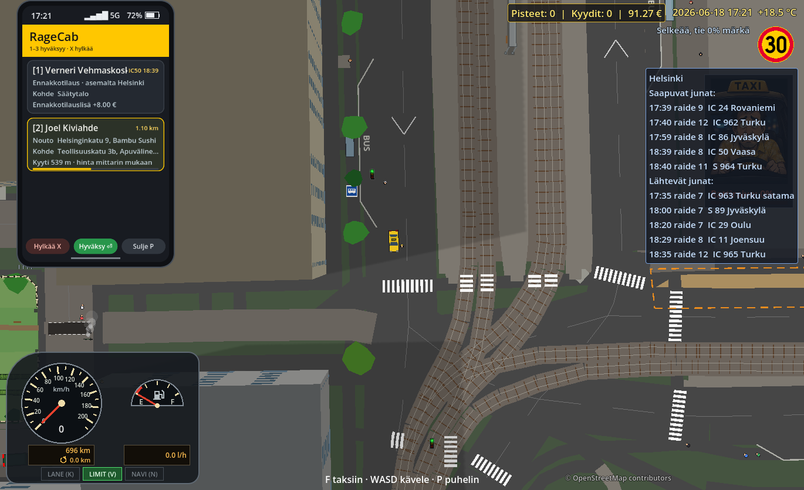
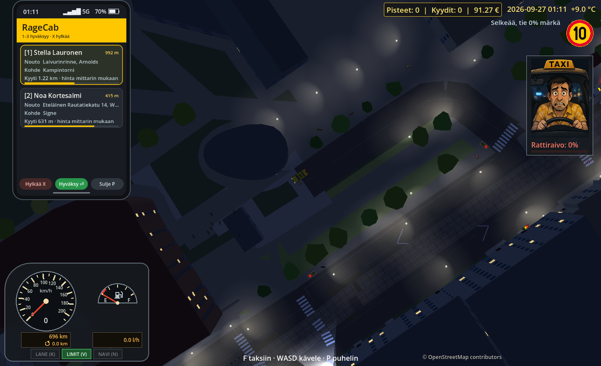
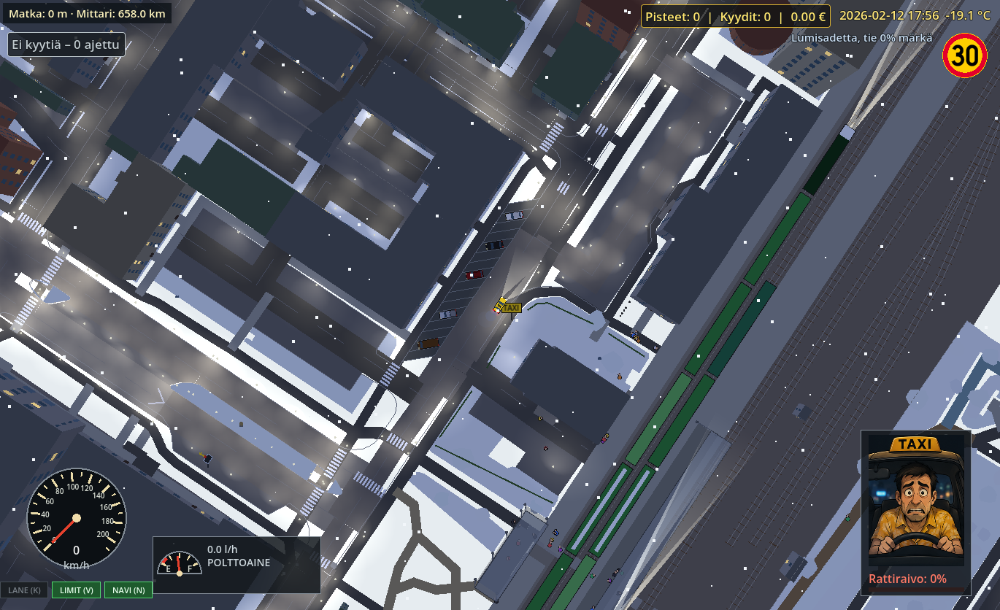
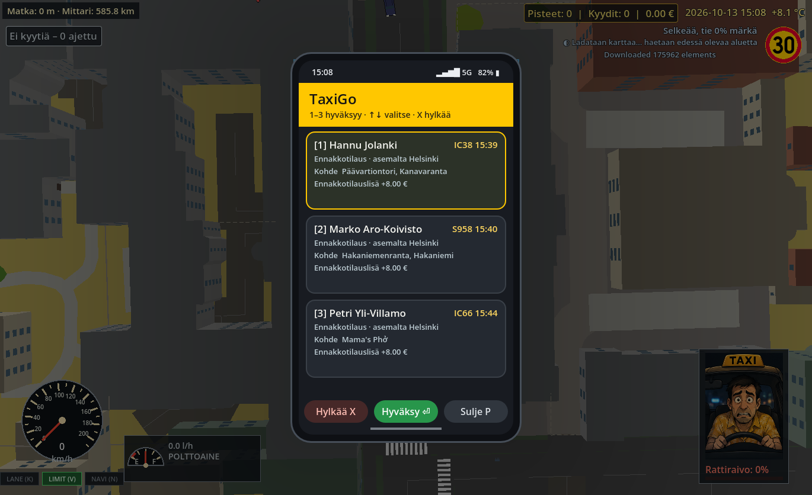
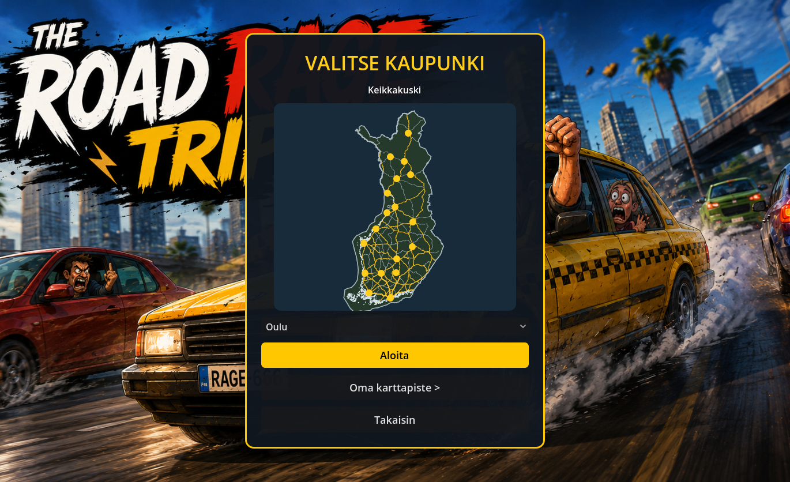
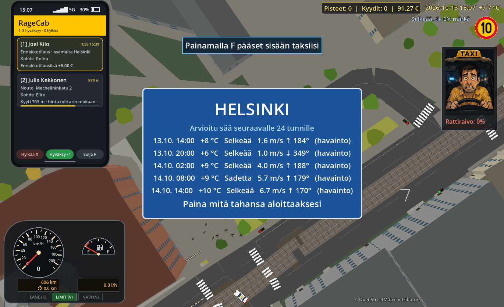

Oikeita teitä, oikeita paikkoja
Tunnista tuttu risteys, oikaise puiston ohi ja etsi asiakkaan osoite. Oikeat suomalaiset kadut ovat sinun pelikenttäsi.
Suomalainen taksi. Yliluonnollinen raivo.
Ruuhka ei väistä kohteliaisuudella. Kerää raivoa, huuda muut kuskit sivuun ja paina kaasu pohjaan. Uusimmassa versiossa kaupunki juhlii pyhiä, liikenne seuraa oikeita ruuhkia ja voit astua sisään koteihin.
Henkilöiden nimet arvotaan satunnaisesti, eivätkä ne tarkoita oikeita ihmisiä.






The Road Rage Trip on ylhäältä kuvattu taksipeli Suomen oikeilla kaduilla. Sinä olet sen antisankari: taksikuski, jonka raivo siirtää autot tieltä.
Asiakas odottaa. Koko katu seisoo. Sinä et. Kun raivoa on tarpeeksi, paina SPACE ja huuda ruuhka helvettiin. Muut autot siirtyvät suoraan tien sivuun ja edessäsi pidetään ajoväylä auki vähintään kymmenen sekunnin ajan. Vaikka mittarissa olisi 210 km/h. Ei sankaripuheita. Taksamittari käy.
Tämä ei ole pelkkä tausta. Tieverkosto, sää, jalankulkijat ja sääntöjen rikkomisen seuraukset elävät ympärilläsi.
Tunnista tuttu risteys, oikaise puiston ohi ja etsi asiakkaan osoite. Oikeat suomalaiset kadut ovat sinun pelikenttäsi.
Raivo ei ole pelkkä ilme mittarissa. Se on supervoimasi. Ylinopeus kasvattaa raivoa; kun sitä riittää, SPACE raivaa muut autot sivuun. Raivohuuto pitää tien auki vähintään kymmeneksi sekunniksi ja raivaa sitä pidemmältä, mitä kovempaa ajat. Sinä painat kaasua. Muut väistävät.
Henkilöautot, bussit, kuorma-autot, matkailuautot, pyöräilijät ja kesäisin moottoripyörät jakavat kadut kanssasi. Kolarista voi seurata tienvarren sanaharkka. Pidä pää kylmänä – tai kerää tarpeeksi raivoa ja huuda tie auki.
Peltikamera voi yllättää juuri kun vauhti alkaa maistua. Puut huojuvat, lehdet lentävät, ja kova kolari jättää taksin savuamaan ja pysähtyneeksi viideksi sekunniksi.
Paina N tai P ja avaa puhelin. Aktiivisella kyydillä se näyttää seuraavan käännöksen, etäisyyden ja kadunnimen. Vapaana sama puhelin näyttää kyytipyynnöt.
Jatka tutuilta kaduilta kohti uusia maisemia. Keskusta vaihtuu lähiöihin, metsiin ja rantateihin, ja seuraava asiakas odottaa jo jossain edessä.
Ylitä joki, seuraa rantatietä ja löydä reitti siltojen kautta. Vesi tekee maisemasta kauniin, mutta taksisi paikka on kuivalla maalla.
Sää muuttuu lennossa: sade kastelee tien vähitellen, lätäköt roiskuvat renkaiden alla ja märkä asfaltti vie pitoa juuri silloin kun sitä eniten tarvitset.
Katuvalot, hehkuvat ikkunat ja vastaantulijoiden ajovalot halkovat pimeyttä. Yövuorossa tuttu kaupunki näyttää toiset kasvonsa.
Asukkaat kävelevät omille ovilleen, tarkistavat puhelintaan, istuvat penkillä tai lenkkeilevät – ja horjuvat baarista kotiin. Pidä silmät auki: kaikki eivät kulje suoraan.
Risteykset ja liikennevalot ohjaavat sekä sinua että jalankulkijoita. Punaisia päin ajaminen näkyy suoraan taksin pistemäärässä.
Valitse keikkakuskina aloituspäivä ja kellonaika. Lumi kertyy teille ja katoille, renkaat jättävät jälkiä ja auraajat puhdistavat katuja. Kevät tuo jäälautat, kesä vihreyden ja syksy ruskan.
Mittari käy, matka etenee ja kassa kasvaa. Vie asiakas perille, nappaa maksu ja etsi seuraava kyyti.
Törmäykset ja holtiton ajo syövät tyytyväisyyttä. Reipas, ajoissa perille päättyvä kyyti voi tuoda jopa kymmenen euron tipin.
Oikeat juna-aikataulut herättävät asemat eloon: junat saapuvat valot päällä, asemalla kuulutetaan ja matkalaukkujen kanssa odottava asiakas on jo varannut kyytinsä.
Ota oikea sää käyttöön ja kohtaa valitsemasi paikan ja ajan keli ratin takana. Sade piiskaa tuulilasia, pakkanen puree ja liukas tie koettelee hermojasi. Asiakas haluaa silti perille.
Polttoaine kuluu ajaessa. Aja huoltoasemalle, tankkaa pumpun hintaan ja palaa asiakkaiden pariin ennen kuin mittari näyttää tyhjää.
Kaikki asiakkaat eivät odota kadunkulmassa. Aja rampista pysäköintihalliin ja nouda kyyti myös maan alta – navigaattori näyttää tietä.
Sama siirrettävä puhelin näyttää vapaan taksin kyydit ja junamatkustajien ennakkotilaukset. Hyväksytyllä kyydillä se vaihtuu navigaattoriksi.
Uudenvuodenyön ilotulitukset, halloweenin kummitukset, itsenäisyyspäivän kynttilät, juhannuskokot ja joulun valot, tähdet ja tontut seuraavat pelin kalenteria.
Kilpaileva taksikuski ei väistä? Astu ulos ja huuda päin naamaa. SPACE lyö, Shift väistää ja F pakenee. Raivo tekee iskuista kovempia – ja vastustajallakin on raivomittari.
Pyöräilijät polkevat omia reittejään ja jättävät pyöränsä telineisiin. Pidä silmällä: joku saattaa juosta paikalle ja kaasuttaa pyörällä tiehensä. Kesällä moottoripyörät palaavat teille.
Järvet aaltoilevat tuulessa ja metsät humisevat. Rannalla pelataan lentopalloa ja tennistä, leirintäalueilla on telttoja ja asuntovaunuja – ja kettu vilahtaa lähiön pihalla.
Nouse taksista, kävele etuovelle ja astu sisään. Huoneet ovat talon muotoisia, ja H tekee mistä tahansa talosta kotisi.
Aamun ja illan ruuhkat, juhannuksen hiljaiset kadut ja jouluviikko seuraavat oikeita liikennemittauksia ympäri Suomen.
Oikeat tiesääasemat tuovat liukkauden peliin, aurat ajavat oikeita reittejään ja tien varren opasteet näyttävät mitä edessä odottaa.
Kaupunki ei aio tehdä työvuorostasi helpompaa. Seuraavaksi kaduille on luvassa vielä lisää hankaluuksia.
Piilokamerat eivät riitä ikuisesti. Oikeat poliisiautot lähtevät perään sireenit päällä, ja pakoon pääseminen vaatii muutakin kuin huudon.
Latausasemat ovat jo kartalla. Seuraavaksi kaduille tulevat sähköautot – ja latausjonot.
Kaupunki on sinun pelikenttäsi. Pisteet voit pilata itse.
Versio 0.20.0beta opettaa pelin uusille kuskeille, tuo koko Suomen kartan asennukseen ja pitää ajon sujuvana suurillakin nopeuksilla.
Lataa uusin Windows-asennuspaketti. Peli on kehitysvaiheessa: virheitä ja suorituskykyongelmia voi esiintyä.